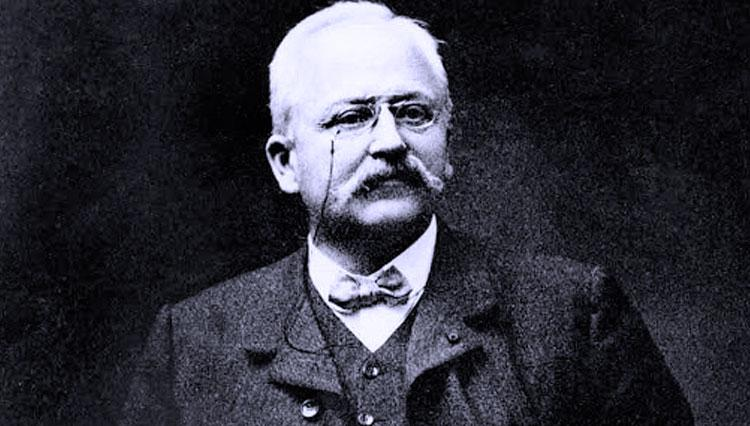
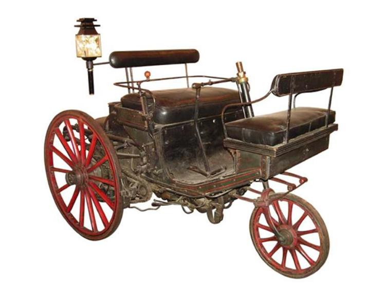
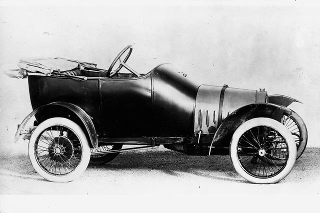
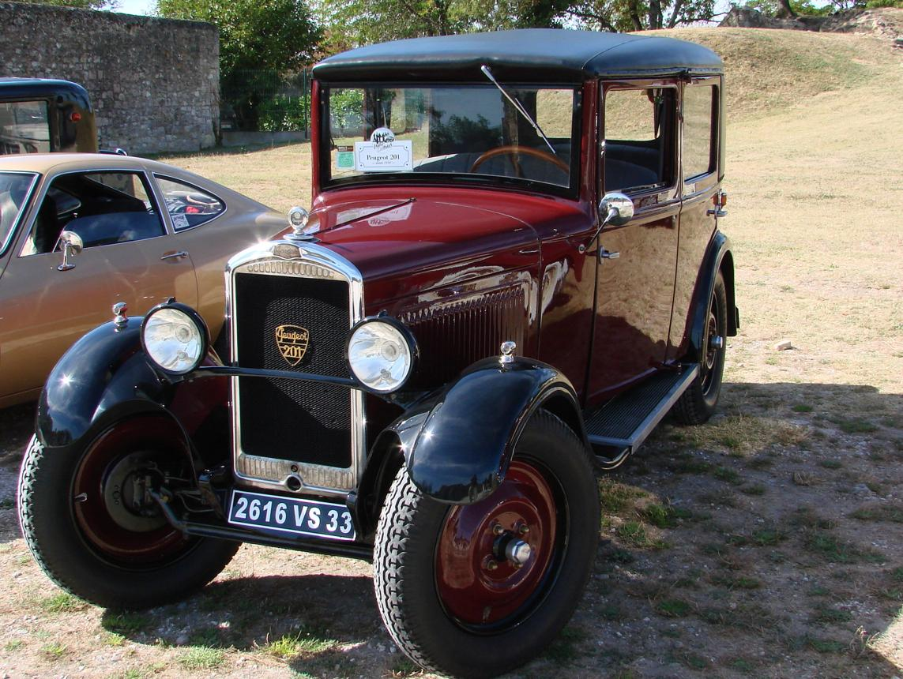
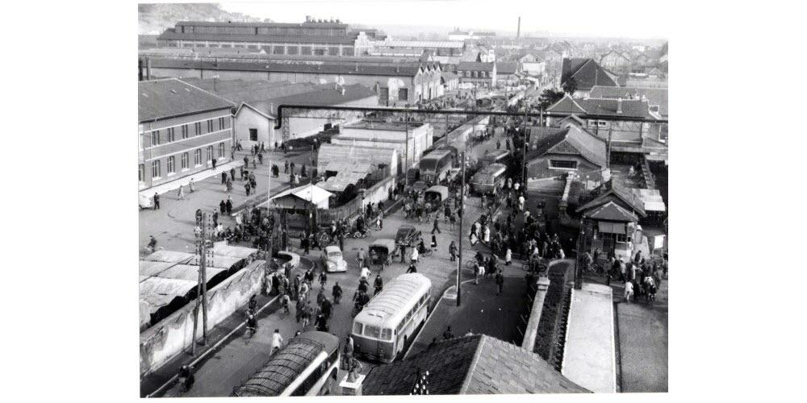
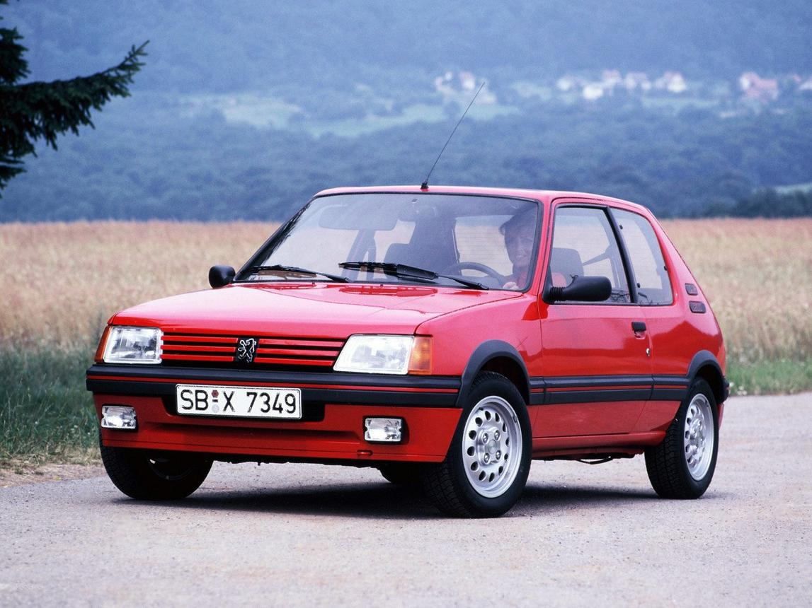
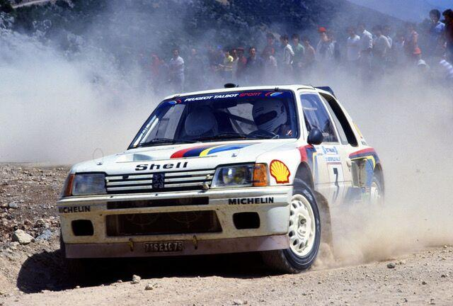
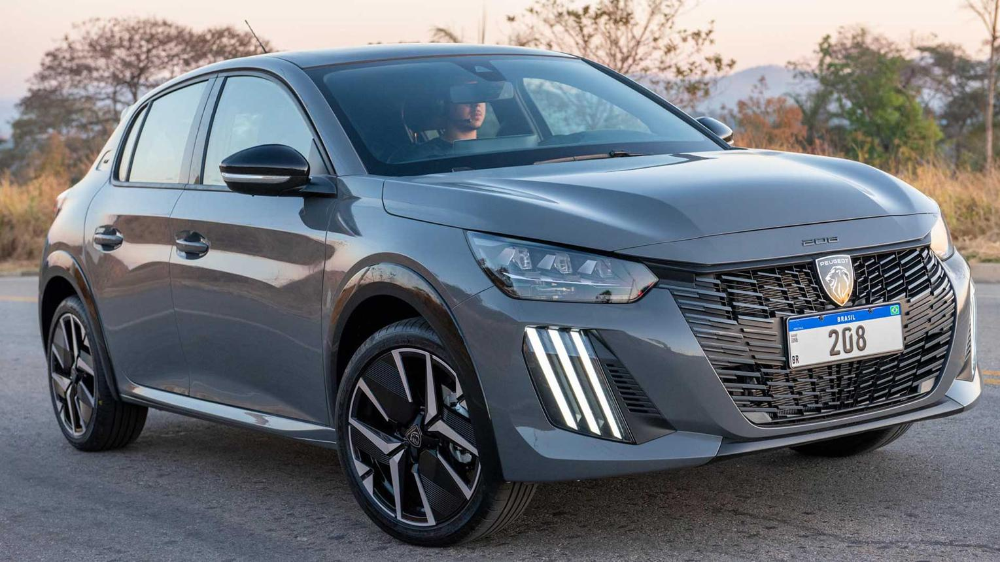
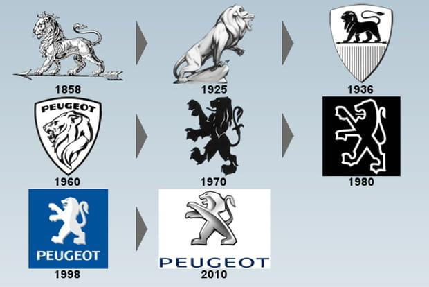
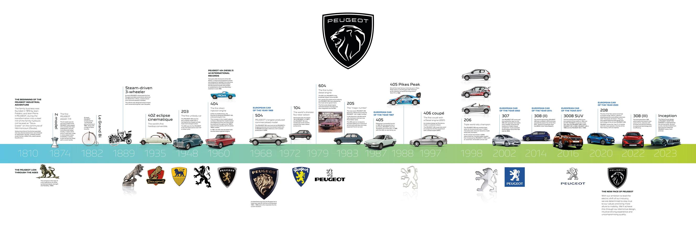

L'histoire de Peugeot commence en 1810, bien avant l'invention de l'automobile. La famille Peugeot transforme un ancien moulin situé dans l'est de la France en une usine métallurgique. L'entreprise fabrique d'abord des lames de scie, des ressorts, des moulins à café, des outils, des bicyclettes et divers objets en acier. Grâce à la qualité de ses produits, Peugeot devient rapidement une entreprise reconnue dans toute la France. À la fin du XIXᵉ siècle, Armand Peugeot comprend que l'automobile représente l'avenir et décide d'investir dans ce nouveau secteur.

En 1889, Peugeot présente sa première automobile : la Type 1, équipée d'un moteur à vapeur. L'année suivante, en 1890, la marque construit sa première voiture équipée d'un moteur à essence développé sous licence de Gottlieb Daimler. En 1891, Peugeot lance la Type 3, qui devient la première voiture française produite en série. Elle connaît un grand succès et participe à plusieurs compétitions automobiles.

Au début du XXᵉ siècle, Peugeot développe rapidement sa gamme de voitures. En 1913, la marque lance la célèbre Peugeot Bébé, une petite voiture économique conçue avec la participation de l'ingénieur Ettore Bugatti. Peugeot se distingue également en compétition en remportant plusieurs courses prestigieuses grâce à des moteurs très innovants. Pendant la Première Guerre mondiale, l'entreprise fabrique aussi des camions, des moteurs, des armes et du matériel militaire.

Après la guerre, Peugeot poursuit son développement avec des voitures fiables et accessibles. En 1929, la marque lance la Peugeot 201, première voiture à utiliser une numérotation à trois chiffres avec un zéro au milieu (201, 301, 401…). Cette manière de nommer les modèles deviendra la signature de Peugeot. Dans les années 1930 apparaissent également les 302 et 402, reconnues pour leur design moderne.

Pendant la Seconde Guerre mondiale, les usines Peugeot sont occupées par l'Allemagne et produisent du matériel militaire. Après la Libération, la marque relance progressivement son activité. En 1948, Peugeot présente la 203, première nouvelle voiture de l'après-guerre. Elle connaît un immense succès grâce à sa robustesse, son confort et sa faible consommation.

Cette période est marquée par plusieurs modèles devenus légendaires. Parmi eux :
En 1976, Peugeot rachète Citroën et crée le groupe PSA.

Peugeot possède un impressionnant palmarès sportif. La 205 Turbo 16 domine le championnat du monde des rallyes dans les années 1980. La marque remporte également :
plusieurs titres internationaux en endurance.

Au XXIᵉ siècle, Peugeot modernise entièrement sa gamme. Parmi les modèles récents :
En 2021, PSA fusionne avec Fiat Chrysler Automobiles pour créer le groupe Stellantis, l'un des plus grands constructeurs automobiles mondiaux.

Le lion Peugeot apparaît dès 1858, bien avant les automobiles. Il symbolise :
Aujourd'hui, ce logo est l'un des plus anciens encore utilisés dans l'industrie automobile.

